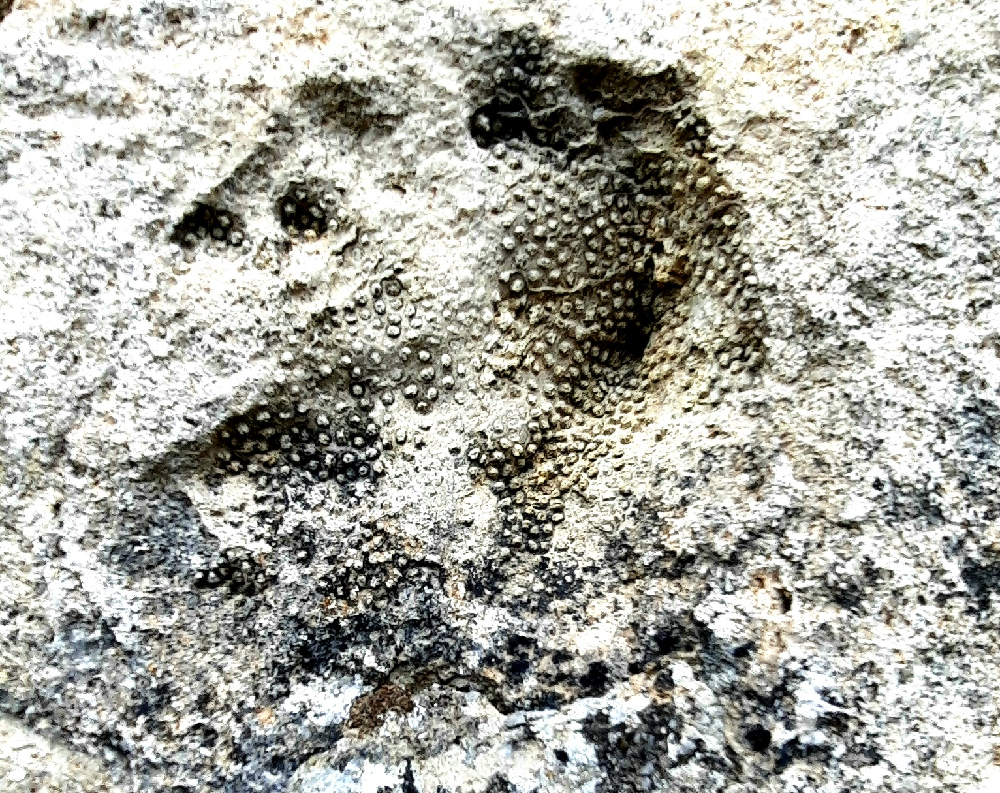

Calcari a Porites di Petralia Sottana

ITALIANO - Geosito A.R.T.A. n. 85 che annovera i costoni rocciosi determinanti la morfologia del centro abitato. Essi sono costituiti prevalentemente da calcari bioermali e/o calcari bioclastici in cui s’individua il genere Porites. Sono protetti e valorizzati anche i calcari biocostruiti del Giura‐Cretaceo, utilizzati in passato per la realizzazione dei marciapiedi del corso principale e inseriti nel sentiero geologico urbano.
INGLESE - I am Gaetano Ferrarelli